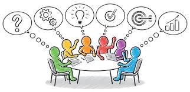

ENTRE PAIRS : groupe de codéveloppement adressé aux cadres et adjoints pédagogiques du secteur Enfance, Pré et Parascolaire.
Je vous invite à me rejoindre dans l’expérience d’une approche de formation innovante :
Le Co-Développement
LE GROUPE DE CODEV, C’EST QUOI ?
C’est un espace collaboratif d’apprentissage où un groupe de personnes décide d’améliorer sa pratique professionnelle en se rencontrant régulièrement, toutes les 4-6 semaines afin de partager ses expériences, pratiquer l’intelligence collective, apprendre ensemble, apprendre les uns des autres.
Vous aurez la possibilité soit de présenter votre situation, soit de faire partie du groupe en tant que « consultant ». Chacun y trouve son compte : celui ou celle qui amène la situation sortira de la séance avec de nouveaux points de vue et pistes d’action. Les «pairs » s’engagent à être véritablement impliqués dans la proposition d’idées et nouveaux regards, au service de la situation traitée. Le rôle de « pair-consultant » vous permettra d’être dans une posture réflexive ainsi que de valorisation de vos expériences. Cela se révèlera tout autant bénéfique pour votre pratique professionnelle que pour celui ou celle qui aura présenté sa problématique. Le partage d’expérience aura un impact sur votre propre posture, avec un transfert d’apprentissages certain.
POURQUOI LE CODEV ?
- Avoir un groupe d’appartenance et d’entraide
- Faire émerger l’intelligence collective
- Sortir de la solitude de la fonction de cadre et se confronter à ses pairs
- Partager difficultés, questionnements et outils de résolution
- Créer des liens significatifs entre pairs pour se soutenir et valoriser l’entraide.
- Trouver et donner du soutien
- Se sentir utile
- Se sentir solidaire
- Se sentir compétent
- Changer de regard sur soi et/ou la situation, le contexte
- Repartir avec des pistes d’action concrètes
QUEL EST MON RÔLE ?
Lors du CODEV j’aurai le rôle de facilitatrice et personne-ressource. Je vous accompagnerai selon un processus bien défini en 6 étapes (selon la méthode élaborée par A. Payette et C. Champagne) en étant garante des modalités, de la finalité et des valeurs sous-jacentes : Entraide, Engagement, Respect.
Je mettrai à votre service toutes mes compétences, créativité et passion du métier afin de vous offrir soutien, répit et ressourcement, pour un mieux-être dans votre fonction de cadre.
MODALITÉS :
- Groupe de 4-8 personnes au maximum.
- Rencontre toutes le 4-6 semaines ( 8 séances de 2h30 sur une année scolaire)
- Une fois les personnes réunies, un doodle nous permettra de trouver des moments communs : 2h30 ( en matinée ou après-midi)
- Prix : 450.- pour les 8 séances
- Lieu : Lausanne (le lieu précis sera renseigné lors de l’inscription)
- Inscriptions Ici
- Le groupe commence en octobre 2023 et termine en juin 2024.
- Vous retrouverez les prochaines dates sur mon linkedin